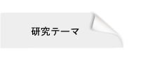
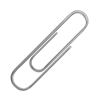

|  | リハビリテーションの支援技術 |
- 把握力調整能力評価トレーニングデバイス iWakka
- 上肢ニューロリハビリロボット NR-Robo
- 手指痙縮減弱のためのリハビリデバイス PFTD
- 起立トレーニングの支援ロボット STATR
- 手指伸筋促通トレーニングデバイス PARKO
| 医療の支援技術 |
- 慢性腰痛者のための固有感覚治療デバイス PROTED
- 膝関節の運動学の教育支援ロボット e-KneeRobo
- 非侵襲手指関節検査デバイスの開発（リハビリ専門デイサービス エバーファインとの連携研究）
| ロボット教示の支援技術 |
- パラレルワイヤ型ロボット教示システムの開発（知の拠点あいち重点研究プロジェクト 次世代ロボット社会形成技術開発プロジェクト ⑥愛知次世代ロボットの産業化・市場創出を推進する要素技術開発(H28-H30年度)の一部として，株式会社近藤製作所とあいち産業科学技術総合センター産業技術センターとの共同研究）
- サービスロボットとその要素技術の現状調査（H29年受託研究・ダイドー株式会社）
| 自動車操舵の支援技術 |
- 電動パワーステアリングの操作感向上に関する研究（株式会社デンソーとの共同研究、H28-30年度）
| レスキューロボットの遠隔操作インターフェース |
これまでの研究
- 柔軟アームを有するマニピュレータの運動制御
- 柔軟物の手動搬送における操作支援制御
- エンジン用電磁駆動バルブのためのリニアモータの設計と制御
- NNを用いた鉛バッテリのSOC検出手法
- 振動刺激によるドライバの疲労軽減・むくみ解消に関する研究
- A/T車のトルクコンバータの動特性モデリング
- 強化学習を用いたブレーキ・アクセルのペダル操作によるドライバモデルの構築
- NNを用いたA/T車の変速ショックの評価モデルの構築
- モータ駆動音の伝達経路のモデリング
- 下肢コントロール機能のモニタリング装置の開発
- 肩関節の運動機能の定量的評価ロボットの開発
- 母親の揺らし動作による入眠導入効果に関する研究
H23年度 採択事業など
| 神戸大学大学院保健学研究科リハビリテーション科学領域 題目：CI療法のためのリハビリテーション支援ロボットの開発 |
|
| 理化学研究所－東海ゴム人間共存ロボット連携センター 題目：母親のあやし行動にみられる「抱いて揺する」動作に関する研究 |
|
| 共同研究(2011.4.1-2012.3.31) |
|
| 愛知県心身障害者コロニー発達障害研究所 題目：車いす利用者の簡易エネルギー消費測定機器の開発 |
|
| 平成２３年度名古屋工業大学研究協力会助成による研究会(産学官連携推進) |
|
| 平成23年度地域新成長産業創出促進補助金事業（地域新成長産業群創出事業） |
|
| 「中部ヘルスケア分野産業振興促進ならびに事業化支援事業」体制強化事業勉強会 （採択事業者：株式会社 CLINICAL STUDY SUPPORT） 事業名：訓練装置開発における関連法規に関する勉強会 事業実施期間：平成２３年6月1日から平成24年2月29日 運営実施者：森田良文（名古屋工業大学・教授） |
|
| 平成23年度地域新成長産業創出促進補助金事業（地域新成長産業群創出事業） |
|
| 「中部ヘルスケア分野産業振興促進ならびに事業化支援事業」体制強化事業勉強会 （採択事業者：株式会社 CLINICAL STUDY SUPPORT） 事業名：慢性痛をモデルにした身体的不具合を起こさないものづくり手法に関する勉強会 事業実施期間：平成23年6月1日から平成24年2月29日 運営実施者：山崎一徳（名古屋工業大学大学院情報工学専攻博士後期課程２年） |
|
| 科学技術振興機構（JST）研究成果最適展開支援プログラムA-Step | |
| フィージビリティスタディ（FS）ステージ 探索タイプ 課題名：感覚運動統合機能の定量的評価のための装置開発 期間：平成23年12月～平成24年7月 |
|
| 産学連携（共同研究実施中） |
|
H22年度 採択事業など
| 科学研究費補助金 基盤研究（C） 「理学療法士・作業療法士養成のための患者ロボットの開発」H20～H22 研究代表者：森田良文 共同研究者：鵜飼裕之 |
|
| 名古屋大学医学部附属病院医療技術部リハビリ部門 「体性感覚回復トレーニング装置の臨床試験」 |
|
| 客員研究員：森田良文，研修生：小林弘樹，山口紘平 （ロボット動作研究チーム：チームリーダー：池浦良淳＠三重大） 共同研究(2010.1.8 - 2011.3.31) 「母親のあやし行動にみられる「抱いて揺する」動作に関する研究」 |
|
| 愛知県心身障害者コロニー発達障害研究所 「車いす利用者の簡易エネルギー消費測定機器の開発」 |
|
| (2010.5-2011.3.31) 「見えるリハビリテーション支援システム研究会」 |
|
| 共同研究(2010.4.1-2012.3.31) |
|
| 神戸大学大学院保健学研究科リハビリテーション科学領域 題目：CI療法のためのリハビリテーション支援ロボットの開発 |
|
| 提案型連携構築事業「ミニ連携」 「工学的アプローチに基づくリハビリ機器開発のための連携体制の構築」H21
| |||
| 地域イノベーション創出総合支援事業 シーズ発掘試験 「体性感覚回復トレーニング装置の開発」H21 |
|||
| 地域イノベーション創出総合支援事業 シーズ発掘試験 「柔軟構造物搬送用パワーアシストシステムの開発」H21 研究代表者：原 進（名古屋大学）共同研究者：森田良文 |
|||